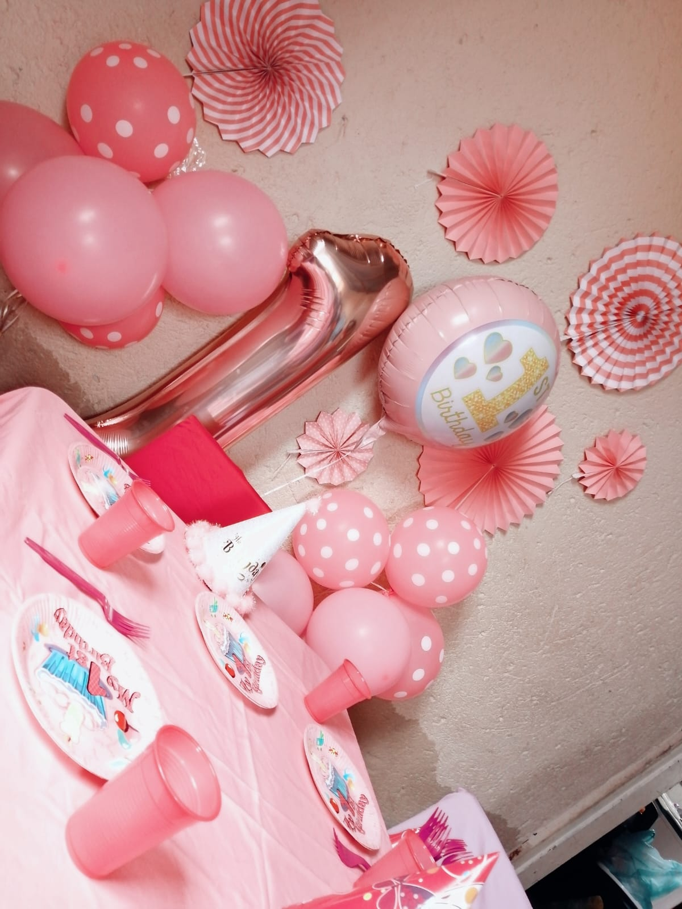

About Mo' The Picnic Guru
Who We Are
Mo' The Picnic Guru is a luxury picnic and event décor company based in Limpopo, dedicated to creating elegant, memorable, and personalized experiences for every client. Our business was founded through a passion for beautiful event styling, creativity, and the desire to turn ordinary moments into unforgettable celebrations.
What began as a small passion project quickly developed into a growing business known for stylish picnic setups, romantic celebrations, birthday décor, kiddies parties, and luxury event experiences. Through dedication, consistency, and attention to detail, we continue to provide high-quality services that leave lasting impressions on our clients.
We believe that every celebration deserves elegance, comfort, and creativity. Our goal is to create stress-free and visually stunning experiences that allow clients to fully enjoy their special moments while we handle the décor and styling.
Our Story
Mo' The Picnic Guru started with the vision of creating beautiful and meaningful experiences through luxury picnic styling and event décor. Inspired by a love for creativity and celebrations, the business began by organizing romantic picnic setups and intimate events for friends and family.
As demand for unique and elegant experiences grew, the business expanded into offering birthday celebrations, kiddies parties, luxury décor styling, and customized event experiences tailored to each client’s preferences.
Today, Mo' The Picnic Guru continues to grow as a trusted décor and event styling brand in Limpopo, known for professionalism, creativity, and exceptional customer service.
Our Mission
Our mission is to create memorable celebrations through innovative, elegant, and personalized event décor experiences. We strive to provide high-quality service while ensuring every client receives a beautiful, comfortable, and unforgettable setup tailored to their occasion.
Our Vision
Our vision is to become one of Limpopo’s leading luxury picnic and event décor brands known for creativity, professionalism, customer satisfaction, and unforgettable event experiences.
Why Clients Choose Us
At Mo' The Picnic Guru, we understand that every event is special and unique. We focus on delivering personalized experiences that reflect the style, personality, and vision of each client.
Clients choose us because of our professionalism, creativity, attention to detail, and commitment to excellence. We take pride in creating luxury setups that are visually elegant, comfortable, and memorable.
Our passion for décor styling and customer satisfaction continues to drive our growth and success as a trusted luxury picnic and event décor business.
Creating Beautiful Memories
